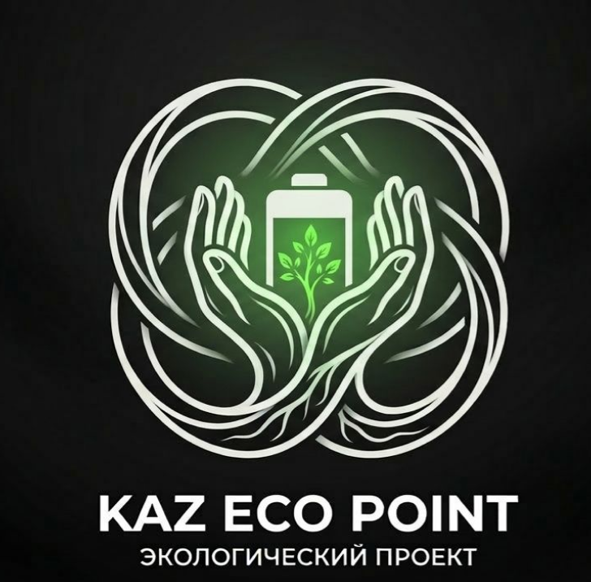

Қауіпті қалдықтарды ыңғайлы тапсыру. Эко-баллдар. Таза болашақ.
Қазақстанда қауіпті қалдықтарды (батарейка, шамдар) жинау инфрақұрылымы жеткіліксіз. Олардың 95%-ы полигондарға түсіп, топырақ пен суды ластайды.
Батарейка, шам және басқа қауіпті қалдықтарды қабылдайтын автоматтандырылған терминалдар.
Эко-балл жүйесі, геймификация, рейтингтер және жеке үлесті бақылау.
Серіктестерден жеңілдіктер, «Эко-батыр» мәртебесі, университеттер арасындағы жарыстар.
Құрылғыларды өндіру және Қазақстан бойынша орнату.
Мобильді қосымша, аналитика және серіктестермен интеграция.
Қалдықтарды жинау және қайта өңдеушілерге жеткізу.
Эко-сабақтар, кампаниялар, сұрыптау мәдениетін дамыту.
Үлесті бақылау, мемлекет пен бизнеске есеп беру.
Бизнес тарту, лоялдылық бағдарламалар, гранттар.
Экологиялық сана артады, жастар белсенді қатысады, тұрақты әдеттер қалыптасады.
Топырақ пен су ластануы азаяды, қауіпті қалдықтар көлемі қысқарады.
Жасыл экономика дамиды, жаңа жұмыс орындары ашылады, бизнес ESG бағытын қолдайды.
Үйге жақын жерде ыңғайлы тапсыру мүмкіндігі.
Белсенді қатысушылар, эко-батырлар, жарыстар.
ESG бағытын ұстанатын компаниялар, сауда орталықтары, кофеханалар.
Полигон жүктемесін азайту, экологияны жақсарту.
Таза шикізат, жабық цикл.
Нақты әрекетке арналған құралдар мен аналитика.